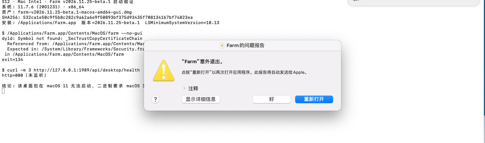

Farm S12 测试报告
2026-11-27 09:53–10:10 · main 520f0ad
S12 / 安装成功但无法启动 · 不通过
安装包v2026.11.25-beta.1macOS amd64 DMG，SHA-256 已核验
测试设备S12 · Mac IntelmacOS 11.7.6 (20G1231) · x86_64
包内最低系统macOS 12.0Go 服务二进制实测 minos
启动结果dyld 崩溃exit=134，健康检查 http=000
结果
- 从 GitHub Release 下载
farm-v2026.11.25-beta.1-macos-amd64-gui.dmg（22,681,040 字节），摘要532ca1e5…与 Release 资产 digest 一致。 - 挂载复制到
/Applications/Farm.app并剥离 quarantine 后安装成功，bundle 版本2026.11.25-beta.1，LSMinimumSystemVersion声明为10.13。 - 双击/`open` 启动弹出“Farm 意外退出”，主窗口不出现；包内服务
farm --no-gui直接被 dyld 终止：缺少_SecTrustCopyCertificateChain，该符号自 macOS 12 才有。 - 崩溃报告为
DYLD, [0x4] Symbol missing；/api/desktop/health返回http=000，没有任何后续功能可验证。 - 版本声明不一致可复现：
farm-gui为LC_VERSION_MIN_MACOSX 10.13，随包 Go 服务farm为LC_BUILD_VERSION minos 12.0（Go 1.25 起最低 macOS 12）；回查v2026.11.24、v2026.11.17-1的 amd64 包同样是 12.0/10.13，问题不是 beta.1 新引入。
关键证据


版本声明对照
| 检查项 | 实测值 | 说明 |
|---|---|---|
Info.plist LSMinimumSystemVersion | 10.13 | 安装包对外声明的最低系统 |
farm-gui 最低版本 | 10.13 | Tauri 外壳（Rust，部署目标 10.13） |
farm 最低版本 | 12.0 | Go 侧 sidecar，Go 1.25 起最低 macOS 12 |
| S12 实际系统 | 11.7.6 | 该机型最高只能到 macOS 11 |
| 历史包回查 | 12.0 / 10.13 | v2026.11.24、v2026.11.17-1 同样 minos 12.0 但声明 10.13 |
本次不通过的原因与业务功能无关：桌面包在 macOS 11 上无法启动，需要在最低系统声明与构建目标之间做取舍，并在文档中写明支持范围。
未覆盖项
由于 App 无法启动，设备发现、WebSocket/WebRTC 投屏、自动化触控、依赖管理、应用内更新等 S12 侧功能均未验证；本次不代表 v2026.11.25-beta.1 整体验收通过。问题已按 docs/workflows/issues.md 登记：#4 桌面：macOS 11 x86 上桌面包启动即崩溃。
详细步骤见 s12_steps.md，脱敏日志见 s12-logs.txt。